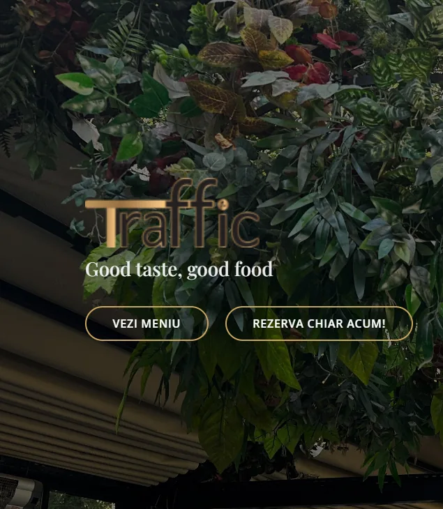

Creare site web în București: ce trebuie să conțină un website care aduce cereri
Ce trebuie să conțină un website pentru o afacere din București: mesaj clar, pagini de servicii, SEO local, viteză și măsurarea solicitărilor.
Citește articolulGhiduri clare despre SEO, promovare online, website-uri și măsurarea rezultatelor. Fără jargon inutil, cu exemple și pași aplicabili.
Articolele sunt afișate de la cea mai recentă dată de publicare.
Ce trebuie să conțină un website pentru o afacere din București: mesaj clar, pagini de servicii, SEO local, viteză și măsurarea solicitărilor.
Citește articolul
Google Ads, Meta, TikTok sau SEO? Alegerea corectă pornește de la intenția clientului, ofertă, buget și modul în care măsori rezultatele.
Citește articolul
Un ghid transparent despre elementele care formează bugetul unui website și diferența dintre o pagină simplă și o platformă pregătită pentru creștere.
Citește articolul
Cum influențează LCP, CLS și INP experiența vizitatorilor și ce merită optimizat întâi.
Citește articolul
Diferența dintre click, lead și vânzare și de ce ROAS nu spune singur toată povestea.
Citește articolul
Tehnic, conținut, intenție de căutare și măsurare într-un plan SEO care poate fi executat.
Citește articolul